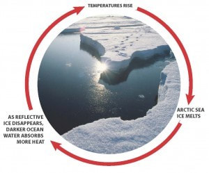

Feed-back Loops can also help explain why global warming exists
A Feedback loop is something that accelerates or decelerates a warming trend. A Postive feedback will increase the warming initially. A Negative feedback will decrease the warming initially. Examples of Feedback loops would be sea level rise, rainfall, droughts,and deforestaton.
Furthermore, clouds are a huge factor that changes the earth's climate. Clouds reflect about a third of the sunlight that hits the atmosphere, and reflects it back into space. For example, warmer climates will lead to more water vapor or clouds, and cause there to be less heat which will slow down the increased warming.
Another example of feedback loops are precipation. Data shows that as the earth becomes warmer the planet will see more precipation. Changes may cause there to be droughts in some areas, and more water in other dry areas. These plants that are growing will remove more carbon from the atmosphere , or will kill some plants and cause there to be more carbon in the sky.
Ice is a very strong positive feedback loop. Since ice is white and reflective, and the ocean is dark and absorbs heat faster. As the overall temperature of earth increases, the ocean will absorb more heat which will cause more ice to melt which will make the earth warmer.
